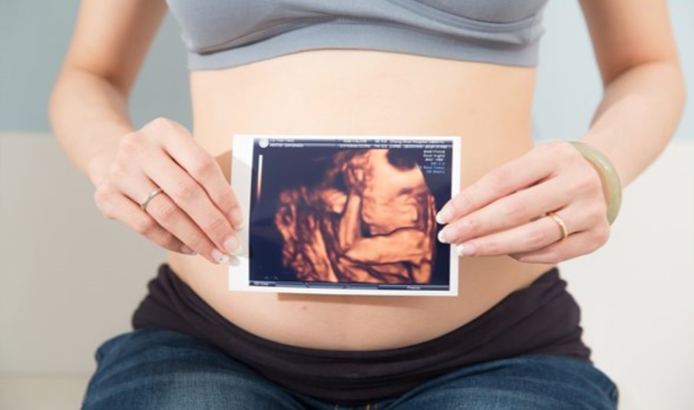

月號－哺乳育嬰站
月號－哺乳育嬰站隨著疫情解封、口罩解禁、加上長假有許多群聚的機會，都是發生傳染疾病的高峰期，依據疾病管制署監測資料顯示近日全國腸病毒門急診就診人次一週上升16.1％，不論是腸病毒、A型流感、腺病毒等，病毒在社區中蠢蠢欲動，而近期社區以克沙奇A型為多，同時有腸病毒71型及D68 型病毒活動。急診兒科醫師提醒：「社區中有蠻多病毒處於流行的階段，家長要特別留意！」 |
||||||
| 傳染病季節性不像往常規律 | ||||||
許多父母趁著連假帶小孩出遊，加上天氣變暖，口罩難免開始戴不住，多數家長會有觀念覺得反正天氣變熱後許多呼吸病毒都會減少，林口長庚醫院兒科急診主治醫師吳昌騰提醒：「在臺灣許多病毒流行不見得是跟天氣有關，加上先前COVID-19已經把病毒流行季節打破，再加上還有免疫債務的問題。」不見得天氣變暖後，呼吸道傳染疾病就會消失。 「舉例來說，流感確實在冬天會比較嚴重，過往在春天、夏天明顯趨緩，但是至今到四月份仍是有流感重症，必須提醒家長傳染疾病的季節性，並不像疫情前那樣常規及規律，時時刻刻都還是要警覺。」 尤其腸病毒疫情最近明顯升溫，台中市衛生局長曾梓展表示：「兒童腸病毒每週門診量約300 人，較去年同期增3倍。」全台都是一致的現象，高屏區2023年第13週因腸病毒就診有426人次，比去年同期80人次高出5倍之多，腸病毒流行趨勢持續向上！ |
||||||
| 社區流行五大類病毒 | ||||||
特別在連假期間聚餐、社交活動活絡，病毒更有機會在社區中會傳播，醫師分享近期在臨床觀察到，兒童主要流行的傳染疾病有以下幾種： |
||||||
| 依指揮中心公告，於4/17起，搭乘大眾運輸交通工具將不再強制戴口罩，面對這樣的處境下，家長該如何保護兒童健康？ | ||||||
|
||||||
由於COVID-19流行造成這幾年出生的孩子免疫負債、恐怕缺乏群體免疫力，今年腸病毒將是家長們與兒科醫師需要一同努力防範的威脅。腸病毒傳染力強而且無法使用酒精殺死，因此在生活中落實「濕、搓、沖、捧、擦」洗手五步驟非常重要。 尤其是出入幼兒園、托嬰中心、親子館等場所、返家後與進食前等時機。家中若有幼童感染腸病毒，也要小心避免接觸其他幼兒或即將生產的孕婦，處理完感染幼童的口鼻分泌物與糞便後也要正確洗手以免傳播病毒。衛生福利部疾病管制署也曾提醒，看病前後、擤鼻涕後、跟小寶寶玩耍之前也都是要洗手的時機，建議家長多多留意。 |
||||||
|  | ||||||
| 資料來源 1.連假效應！流感、腸病毒門診人數增加 醫師：COVID打破病毒流行季節 - Heho親子 2.腸病毒又流行了！嘔吐腹瀉是感染腸病毒嗎？兒科醫師解答「症狀迷思」- Heho健康 |